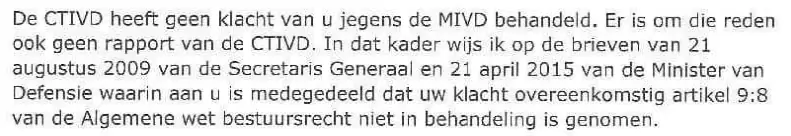

Prueba · Carta
Director del MIVD a Giltay sobre el informe de la CTIVD, 24 de octubre de 2017
El pasaje
«La CTIVD no ha tramitado ninguna queja suya contra el MIVD. Por ese motivo, tampoco hay ningún informe de la CTIVD. En este contexto, me remito a las cartas del 21 de agosto de 2009 del secretario general y del 21 de abril de 2015 de la ministra de Defensa, en las que se le comunicó que su queja, de conformidad con el artículo 9:8 de la Ley General de Derecho Administrativo, no se había admitido a trámite». Página 1, el segundo párrafo, que constituye toda la respuesta sobre el fondo de la carta. Traducido del neerlandés; el texto original figura a continuación.
Texto original
“De CTIVD heeft geen klacht van u jegens de MIVD behandeld. Er is om die reden ook geen rapport van de CTIVD. In dat kader wijs ik op de brieven van 21 augustus 2009 van de Secretaris Generaal en 21 april 2015 van de Minister van Defensie waarin aan u is medegedeeld dat uw klacht overeenkomstig artikel 9:8 van de Algemene wet bestuursrecht niet in behandeling is genomen.” La carta escribe «Secretaris Generaal» (secretario general) sin guion, y así figura aquí.

Por qué importa este documento
En esta carta del 24 de octubre de 2017, el director del MIVD (Servicio de Inteligencia y Seguridad Militar) escribe que la CTIVD (comisión de supervisión de los servicios de inteligencia y seguridad) no ha tramitado ninguna queja de Giltay contra el MIVD y que, «por ese motivo, tampoco hay ningún informe de la CTIVD». Giltay había pedido al ministro de Asuntos Generales el informe de la CTIVD sobre su queja. En lugar de ello, el servicio se remite a dos cartas anteriores, de 2009 y de 2015, en las que se había comunicado a Giltay que su queja no se había admitido a trámite. Con ello, la carta dice lo contrario que la carta ministerial del 6 de junio de 2017, que había rechazado su solicitud de rehabilitación invocando una investigación de esa misma CTIVD. El ensayo ve en ello la confirmación de que el segundo pilar de esa negativa, una investigación de la CTIVD, no existía.
La carta está firmada «voor deze» (por delegación), en nombre del ministro de Defensa, por el director del MIVD, el general de división O. Eichelsheim, cuyo nombre y rango figuran bajo la firma. Formalmente es, pues, una carta del ministro, que contradice así su propia carta del 6 de junio de 2017. La cita de la sección de voces nombra al firmante porque es precisamente el propio jefe del servicio quien constata aquí que no existe la investigación de la CTIVD en la que se había apoyado su ministro.
Procedencia
- Documento
- Carta, una página
- Remitente
- Ministerio de Defensa, Servicio de Inteligencia y Seguridad Militar (MIVD), Departamento de Asuntos Jurídicos, Van Alkemadelaan 786, La Haya
- Destinatario
- E. Giltay
- Fecha
- 24 de octubre de 2017, según el sello de fecha de la carta
- Referencia
- DIS2017019472
- Asunto
- «Uw brief» (su carta)
- Referencias
- La carta de Giltay del 21 de septiembre de 2017, en la que pedía al ministro de Asuntos Generales el informe de la CTIVD sobre la tramitación de su queja contra el MIVD. Esa carta se remitió al MIVD. Además, las cartas del 21 de agosto de 2009 del secretario general y del 21 de abril de 2015 de la ministra de Defensa
- Firmado
- En nombre del ministro de Defensa, el director del Servicio de Inteligencia y Seguridad Militar, O. Eichelsheim, general de división. La firma manuscrita está tachada en gran parte en la imagen escaneada
- Contacto
- MIVD/AJZ, el Departamento de Asuntos Jurídicos del servicio. La carta no nombra a ningún funcionario concreto
- Idioma
- Neerlandés
- Fuente
- Imagen escaneada en dedoofpotgeneraal.
nl/ doc/ bijlage19.pdf - Véase también
- Ministerio de Defensa a Giltay, 6 de junio de 2017
Citado en:
- el ensayo «La prohibición cayó, el libro quedó en pie» en el capítulo (7) «Ninguna respuesta sobre el fondo» y en la diapositiva «CTIVD · 2009–2017» de la presentación «La historia en el mapa»
- la sección de voces bajo el epígrafe «Posiciones oficiales».
Documento: https://
Modificado por última vez el 13 de septiembre de 2026, consultado el 27 de noviembre de 2026.

Esta página es una ficha de prueba del libro El general del encubrimiento de Edwin Giltay y del sitio web que lo acompaña.